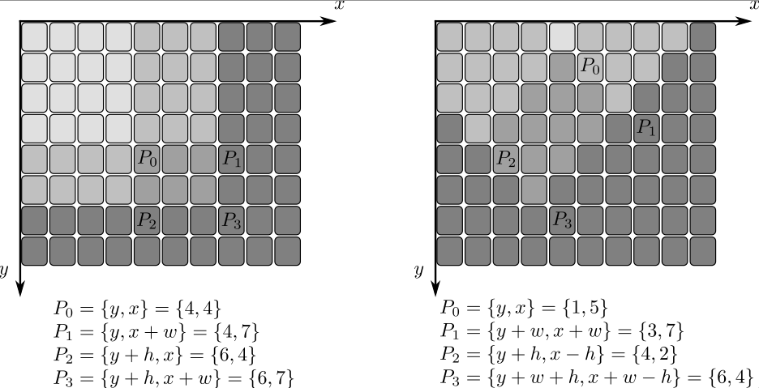

Miscellaneous Image Transformations
Overview
// enums enum cv::AdaptiveThresholdTypes; enum cv::ColorConversionCodes; enum cv::DistanceTransformLabelTypes; enum cv::DistanceTransformMasks; enum cv::DistanceTypes; enum cv::FloodFillFlags; enum cv::GrabCutClasses; enum cv::GrabCutModes; enum cv::ThresholdTypes; enum cv::UndistortTypes; // global functions void cv::adaptiveThreshold( InputArray src, OutputArray dst, double maxValue, int adaptiveMethod, int thresholdType, int blockSize, double C ); void cv::cvtColor( InputArray src, OutputArray dst, int code, int dstCn = 0 ); void cv::distanceTransform( InputArray src, OutputArray dst, OutputArray labels, int distanceType, int maskSize, int labelType = DIST_LABEL_CCOMP ); void cv::distanceTransform( InputArray src, OutputArray dst, int distanceType, int maskSize, int dstType = CV_32F ); int cv::floodFill( InputOutputArray image, Point seedPoint, Scalar newVal, Rect* rect = 0, Scalar loDiff = Scalar(), Scalar upDiff = Scalar(), int flags = 4 ); int cv::floodFill( InputOutputArray image, InputOutputArray mask, Point seedPoint, Scalar newVal, Rect* rect = 0, Scalar loDiff = Scalar(), Scalar upDiff = Scalar(), int flags = 4 ); void cv::grabCut( InputArray img, InputOutputArray mask, Rect rect, InputOutputArray bgdModel, InputOutputArray fgdModel, int iterCount, int mode = GC_EVAL ); void cv::integral( InputArray src, OutputArray sum, int sdepth = -1 ); void cv::integral( InputArray src, OutputArray sum, OutputArray sqsum, int sdepth = -1, int sqdepth = -1 ); void cv::integral( InputArray src, OutputArray sum, OutputArray sqsum, OutputArray tilted, int sdepth = -1, int sqdepth = -1 ); double cv::threshold( InputArray src, OutputArray dst, double thresh, double maxval, int type ); void cv::watershed( InputArray image, InputOutputArray markers );
Detailed Documentation
Global Functions
void cv::adaptiveThreshold( InputArray src, OutputArray dst, double maxValue, int adaptiveMethod, int thresholdType, int blockSize, double C )
Applies an adaptive threshold to an array.
The function transforms a grayscale image to a binary image according to the formulae:
THRESH_BINARY
\[dst(x,y) = \fork{\texttt{maxValue}}{if \(src(x,y) > T(x,y)\)}{0}{otherwise}\]THRESH_BINARY_INV
\[dst(x,y) = \fork{0}{if \(src(x,y) > T(x,y)\)}{\texttt{maxValue}}{otherwise}\]where \(T(x,y)\) is a threshold calculated individually for each pixel (see adaptiveMethod parameter).
The function can process the image in-place.
Parameters:
| src | Source 8-bit single-channel image. |
| dst | Destination image of the same size and the same type as src. |
| maxValue | Non-zero value assigned to the pixels for which the condition is satisfied |
| adaptiveMethod | Adaptive thresholding algorithm to use, see cv::AdaptiveThresholdTypes |
| thresholdType | Thresholding type that must be either THRESH_BINARY or THRESH_BINARY_INV, see cv::ThresholdTypes. |
| blockSize | Size of a pixel neighborhood that is used to calculate a threshold value for the pixel: 3, 5, 7, and so on. |
| C | Constant subtracted from the mean or weighted mean (see the details below). Normally, it is positive but may be zero or negative as well. |
See also:
void cv::cvtColor( InputArray src, OutputArray dst, int code, int dstCn = 0 )
Converts an image from one color space to another.
The function converts an input image from one color space to another. In case of a transformation to-from RGB color space, the order of the channels should be specified explicitly (RGB or BGR). Note that the default color format in OpenCV is often referred to as RGB but it is actually BGR (the bytes are reversed). So the first byte in a standard (24-bit) color image will be an 8-bit Blue component, the second byte will be Green, and the third byte will be Red. The fourth, fifth, and sixth bytes would then be the second pixel (Blue, then Green, then Red), and so on.
The conventional ranges for R, G, and B channel values are:
- 0 to 255 for CV_8U images
- 0 to 65535 for CV_16U images
- 0 to 1 for CV_32F images
In case of linear transformations, the range does not matter. But in case of a non-linear transformation, an input RGB image should be normalized to the proper value range to get the correct results, for example, for RGB \(\rightarrow\) L*u*v* transformation. For example, if you have a 32-bit floating-point image directly converted from an 8-bit image without any scaling, then it will have the 0..255 value range instead of 0..1 assumed by the function. So, before calling cvtColor , you need first to scale the image down:
img *= 1./255; cvtColor(img, img, COLOR_BGR2Luv);
If you use cvtColor with 8-bit images, the conversion will have some information lost. For many applications, this will not be noticeable but it is recommended to use 32-bit images in applications that need the full range of colors or that convert an image before an operation and then convert back.
If conversion adds the alpha channel, its value will set to the maximum of corresponding channel range: 255 for CV_8U, 65535 for CV_16U, 1 for CV_32F.
Parameters:
| src | input image: 8-bit unsigned, 16-bit unsigned ( CV_16UC… ), or single-precision floating-point. |
| dst | output image of the same size and depth as src. |
| code | color space conversion code (see cv::ColorConversionCodes). |
| dstCn | number of channels in the destination image; if the parameter is 0, the number of the channels is derived automatically from src and code. |
See also:
void cv::distanceTransform( InputArray src, OutputArray dst, OutputArray labels, int distanceType, int maskSize, int labelType = DIST_LABEL_CCOMP )
Calculates the distance to the closest zero pixel for each pixel of the source image.
The function cv::distanceTransform calculates the approximate or precise distance from every binary image pixel to the nearest zero pixel. For zero image pixels, the distance will obviously be zero.
When maskSize == DIST_MASK_PRECISE and distanceType == DIST_L2 , the function runs the algorithm described in [25]. This algorithm is parallelized with the TBB library.
In other cases, the algorithm [5] is used. This means that for a pixel the function finds the shortest path to the nearest zero pixel consisting of basic shifts: horizontal, vertical, diagonal, or knight’s move (the latest is available for a \(5\times 5\) mask). The overall distance is calculated as a sum of these basic distances. Since the distance function should be symmetric, all of the horizontal and vertical shifts must have the same cost (denoted as a ), all the diagonal shifts must have the same cost (denoted as b), and all knight’s moves must have the same cost (denoted as c). For the cv::DIST_C and cv::DIST_L1 types, the distance is calculated precisely, whereas for cv::DIST_L2 (Euclidean distance) the distance can be calculated only with a relative error (a \(5\times 5\) mask gives more accurate results). For a, b, and c, OpenCV uses the values suggested in the original paper:
- DIST_L1:
a = 1, b = 2 - DIST_L2:
3 x 3:a=0.955, b=1.36935 x 5:a=1, b=1.4, c=2.1969
- DIST_C:
a = 1, b = 1
Typically, for a fast, coarse distance estimation DIST_L2, a \(3\times 3\) mask is used. For a more accurate distance estimation DIST_L2, a \(5\times 5\) mask or the precise algorithm is used. Note that both the precise and the approximate algorithms are linear on the number of pixels.
This variant of the function does not only compute the minimum distance for each pixel \((x, y)\) but also identifies the nearest connected component consisting of zero pixels (labelType==DIST_LABEL_CCOMP) or the nearest zero pixel (labelType==DIST_LABEL_PIXEL). Index of the component/pixel is stored in labels(x, y). When labelType==DIST_LABEL_CCOMP, the function automatically finds connected components of zero pixels in the input image and marks them with distinct labels. When labelType==DIST_LABEL_CCOMP, the function scans through the input image and marks all the zero pixels with distinct labels.
In this mode, the complexity is still linear. That is, the function provides a very fast way to compute the Voronoi diagram for a binary image. Currently, the second variant can use only the approximate distance transform algorithm, i.e. maskSize=DIST_MASK_PRECISE is not supported yet.
Parameters:
| src | 8-bit, single-channel (binary) source image. |
| dst | Output image with calculated distances. It is a 8-bit or 32-bit floating-point, single-channel image of the same size as src. |
| labels | Output 2D array of labels (the discrete Voronoi diagram). It has the type CV_32SC1 and the same size as src. |
| distanceType | Type of distance, see cv::DistanceTypes |
| maskSize | Size of the distance transform mask, see cv::DistanceTransformMasks. DIST_MASK_PRECISE is not supported by this variant. In case of the DIST_L1 or DIST_C distance type, the parameter is forced to 3 because a \(3\times 3\) mask gives the same result as \(5\times 5\) or any larger aperture. |
| labelType | Type of the label array to build, see cv::DistanceTransformLabelTypes. |
void cv::distanceTransform( InputArray src, OutputArray dst, int distanceType, int maskSize, int dstType = CV_32F )
This is an overloaded member function, provided for convenience. It differs from the above function only in what argument(s) it accepts.
Parameters:
| src | 8-bit, single-channel (binary) source image. |
| dst | Output image with calculated distances. It is a 8-bit or 32-bit floating-point, single-channel image of the same size as src . |
| distanceType | Type of distance, see cv::DistanceTypes |
| maskSize | Size of the distance transform mask, see cv::DistanceTransformMasks. In case of the DIST_L1 or DIST_C distance type, the parameter is forced to 3 because a \(3\times 3\) mask gives the same result as \(5\times 5\) or any larger aperture. |
| dstType | Type of output image. It can be CV_8U or CV_32F. Type CV_8U can be used only for the first variant of the function and distanceType == DIST_L1. |
int cv::floodFill( InputOutputArray image, Point seedPoint, Scalar newVal, Rect* rect = 0, Scalar loDiff = Scalar(), Scalar upDiff = Scalar(), int flags = 4 )
This is an overloaded member function, provided for convenience. It differs from the above function only in what argument(s) it accepts.
variant without mask parameter
int cv::floodFill( InputOutputArray image, InputOutputArray mask, Point seedPoint, Scalar newVal, Rect* rect = 0, Scalar loDiff = Scalar(), Scalar upDiff = Scalar(), int flags = 4 )
Fills a connected component with the given color.
The function cv::floodFill fills a connected component starting from the seed point with the specified color. The connectivity is determined by the color/brightness closeness of the neighbor pixels. The pixel at \((x,y)\) is considered to belong to the repainted domain if:
in case of a grayscale image and floating range
\[\texttt{src} (x',y')- \texttt{loDiff} \leq \texttt{src} (x,y) \leq \texttt{src} (x',y')+ \texttt{upDiff}\]in case of a grayscale image and fixed range
\[\texttt{src} ( \texttt{seedPoint} .x, \texttt{seedPoint} .y)- \texttt{loDiff} \leq \texttt{src} (x,y) \leq \texttt{src} ( \texttt{seedPoint} .x, \texttt{seedPoint} .y)+ \texttt{upDiff}\]in case of a color image and floating range
\[\texttt{src} (x',y')_r- \texttt{loDiff} _r \leq \texttt{src} (x,y)_r \leq \texttt{src} (x',y')_r+ \texttt{upDiff} _r,\]\[\texttt{src} (x',y')_g- \texttt{loDiff} _g \leq \texttt{src} (x,y)_g \leq \texttt{src} (x',y')_g+ \texttt{upDiff} _g\]and
\[\texttt{src} (x',y')_b- \texttt{loDiff} _b \leq \texttt{src} (x,y)_b \leq \texttt{src} (x',y')_b+ \texttt{upDiff} _b\]in case of a color image and fixed range
\[\texttt{src} ( \texttt{seedPoint} .x, \texttt{seedPoint} .y)_r- \texttt{loDiff} _r \leq \texttt{src} (x,y)_r \leq \texttt{src} ( \texttt{seedPoint} .x, \texttt{seedPoint} .y)_r+ \texttt{upDiff} _r,\]\[\texttt{src} ( \texttt{seedPoint} .x, \texttt{seedPoint} .y)_g- \texttt{loDiff} _g \leq \texttt{src} (x,y)_g \leq \texttt{src} ( \texttt{seedPoint} .x, \texttt{seedPoint} .y)_g+ \texttt{upDiff} _g\]and
\[\texttt{src} ( \texttt{seedPoint} .x, \texttt{seedPoint} .y)_b- \texttt{loDiff} _b \leq \texttt{src} (x,y)_b \leq \texttt{src} ( \texttt{seedPoint} .x, \texttt{seedPoint} .y)_b+ \texttt{upDiff} _b\]
where \(src(x',y')\) is the value of one of pixel neighbors that is already known to belong to the component. That is, to be added to the connected component, a color/brightness of the pixel should be close enough to:
- Color/brightness of one of its neighbors that already belong to the connected component in case of a floating range.
- Color/brightness of the seed point in case of a fixed range.
Use these functions to either mark a connected component with the specified color in-place, or build a mask and then extract the contour, or copy the region to another image, and so on.
Since the mask is larger than the filled image, a pixel \((x, y)\) in image corresponds to the pixel \((x+1, y+1)\) in the mask .
Parameters:
| image | Input/output 1- or 3-channel, 8-bit, or floating-point image. It is modified by the function unless the FLOODFILL_MASK_ONLY flag is set in the second variant of the function. See the details below. |
| mask | Operation mask that should be a single-channel 8-bit image, 2 pixels wider and 2 pixels taller than image. Since this is both an input and output parameter, you must take responsibility of initializing it. Flood-filling cannot go across non-zero pixels in the input mask. For example, an edge detector output can be used as a mask to stop filling at edges. On output, pixels in the mask corresponding to filled pixels in the image are set to 1 or to the a value specified in flags as described below. It is therefore possible to use the same mask in multiple calls to the function to make sure the filled areas do not overlap. |
| seedPoint | Starting point. |
| newVal | New value of the repainted domain pixels. |
| loDiff | Maximal lower brightness/color difference between the currently observed pixel and one of its neighbors belonging to the component, or a seed pixel being added to the component. |
| upDiff | Maximal upper brightness/color difference between the currently observed pixel and one of its neighbors belonging to the component, or a seed pixel being added to the component. |
| rect | Optional output parameter set by the function to the minimum bounding rectangle of the repainted domain. |
| flags | Operation flags. The first 8 bits contain a connectivity value. The default value of 4 means that only the four nearest neighbor pixels (those that share an edge) are considered. A connectivity value of 8 means that the eight nearest neighbor pixels (those that share a corner) will be considered. The next 8 bits (8-16) contain a value between 1 and 255 with which to fill the mask (the default value is 1). For example, 4 | ( 255 << 8 ) will consider 4 nearest neighbours and fill the mask with a value of 255. The following additional options occupy higher bits and therefore may be further combined with the connectivity and mask fill values using bit-wise or (|), see cv::FloodFillFlags. |
See also:
void cv::grabCut( InputArray img, InputOutputArray mask, Rect rect, InputOutputArray bgdModel, InputOutputArray fgdModel, int iterCount, int mode = GC_EVAL )
Runs the GrabCut algorithm.
The function implements the GrabCut image segmentation algorithm.
Parameters:
| img | Input 8-bit 3-channel image. |
| mask | Input/output 8-bit single-channel mask. The mask is initialized by the function when mode is set to GC_INIT_WITH_RECT. Its elements may have one of the cv::GrabCutClasses. |
| rect | ROI containing a segmented object. The pixels outside of the ROI are marked as “obvious background”. The parameter is only used when mode==GC_INIT_WITH_RECT . |
| bgdModel | Temporary array for the background model. Do not modify it while you are processing the same image. |
| fgdModel | Temporary arrays for the foreground model. Do not modify it while you are processing the same image. |
| iterCount | Number of iterations the algorithm should make before returning the result. Note that the result can be refined with further calls with mode==GC_INIT_WITH_MASK or mode==GC_EVAL . |
| mode | Operation mode that could be one of the cv::GrabCutModes |
void cv::integral( InputArray src, OutputArray sum, int sdepth = -1 )
This is an overloaded member function, provided for convenience. It differs from the above function only in what argument(s) it accepts.
void cv::integral( InputArray src, OutputArray sum, OutputArray sqsum, int sdepth = -1, int sqdepth = -1 )
This is an overloaded member function, provided for convenience. It differs from the above function only in what argument(s) it accepts.
void cv::integral( InputArray src, OutputArray sum, OutputArray sqsum, OutputArray tilted, int sdepth = -1, int sqdepth = -1 )
Calculates the integral of an image.
The function calculates one or more integral images for the source image as follows:
Using these integral images, you can calculate sum, mean, and standard deviation over a specific up-right or rotated rectangular region of the image in a constant time, for example:
It makes possible to do a fast blurring or fast block correlation with a variable window size, for example. In case of multi-channel images, sums for each channel are accumulated independently.
As a practical example, the next figure shows the calculation of the integral of a straight rectangle Rect(3,3,3,2) and of a tilted rectangle Rect(5,1,2,3) . The selected pixels in the original image are shown, as well as the relative pixels in the integral images sum and tilted .
Parameters:
| src | input image as \(W \times H\), 8-bit or floating-point (32f or 64f). |
| sum | integral image as \((W+1)\times (H+1)\), 32-bit integer or floating-point (32f or 64f). |
| sqsum | integral image for squared pixel values; it is \((W+1)\times (H+1)\), double-precision floating-point (64f) array. |
| tilted | integral for the image rotated by 45 degrees; it is \((W+1)\times (H+1)\) array with the same data type as sum. |
| sdepth | desired depth of the integral and the tilted integral images, CV_32S, CV_32F, or CV_64F. |
| sqdepth | desired depth of the integral image of squared pixel values, CV_32F or CV_64F. |
double cv::threshold( InputArray src, OutputArray dst, double thresh, double maxval, int type )
Applies a fixed-level threshold to each array element.
The function applies fixed-level thresholding to a multiple-channel array. The function is typically used to get a bi-level (binary) image out of a grayscale image (cv::compare could be also used for this purpose) or for removing a noise, that is, filtering out pixels with too small or too large values. There are several types of thresholding supported by the function. They are determined by type parameter.
Also, the special values cv::THRESH_OTSU or cv::THRESH_TRIANGLE may be combined with one of the above values. In these cases, the function determines the optimal threshold value using the Otsu’s or Triangle algorithm and uses it instead of the specified thresh . The function returns the computed threshold value. Currently, the Otsu’s and Triangle methods are implemented only for 8-bit images.
Input image should be single channel only in case of CV_THRESH_OTSU or CV_THRESH_TRIANGLE flags
Parameters:
| src | input array (multiple-channel, 8-bit or 32-bit floating point). |
| dst | output array of the same size and type and the same number of channels as src. |
| thresh | threshold value. |
| maxval | maximum value to use with the THRESH_BINARY and THRESH_BINARY_INV thresholding types. |
| type | thresholding type (see the cv::ThresholdTypes). |
See also:
adaptiveThreshold, findContours, compare, min, max
void cv::watershed( InputArray image, InputOutputArray markers )
Performs a marker-based image segmentation using the watershed algorithm.
The function implements one of the variants of watershed, non-parametric marker-based segmentation algorithm, described in [58].
Before passing the image to the function, you have to roughly outline the desired regions in the image markers with positive (>0) indices. So, every region is represented as one or more connected components with the pixel values 1, 2, 3, and so on. Such markers can be retrieved from a binary mask using findContours and drawContours (see the watershed.cpp demo). The markers are “seeds” of the future image regions. All the other pixels in markers , whose relation to the outlined regions is not known and should be defined by the algorithm, should be set to 0’s. In the function output, each pixel in markers is set to a value of the “seed” components or to -1 at boundaries between the regions.
Any two neighbor connected components are not necessarily separated by a watershed boundary (-1’s pixels); for example, they can touch each other in the initial marker image passed to the function.
Parameters:
| image | Input 8-bit 3-channel image. |
| markers | Input/output 32-bit single-channel image (map) of markers. It should have the same size as image . |
See also: